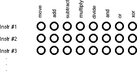
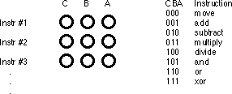
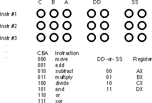
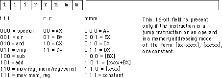
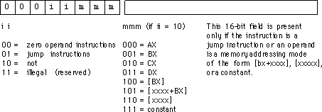
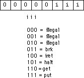
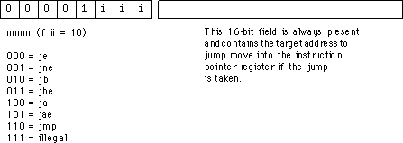

Chapter Three (Part 2) |
Table of Content | Chapter Three (Part 4) |
| CHAPTER
THREE: SYSTEM ORGANIZATION (Part 3) |
|
| 3.3 -
The 886, 8286, 8486, and 8686 "Hypothetical" Processors 3.3.1 - CPU Registers 3.3.2 - The Arithmetic & Logical Unit 3.3.3 - The Bus Interface Unit 3.3.4 - The Control Unit and Instruction Sets |
3.3.5 -
The x86 Instruction Set 3.3.6 - Addressing Modes on the x86 3.3.7 - Encoding x86 Instructions 3.3.8 - Step-by-Step Instruction Execution 3.3.9 - The Differences Between the x86 Processors |
| 3.3 The 886, 8286, 8486, and 8686 "Hypothetical" Processors | |
To understand how to improve system performance, it's time to explore the internal operation of the CPU. Unfortunately, the processors in the 80x86 family are complex beasts. Discussing their internal operation would probably cause more confusion than enlightenment. So we will use the 886, 8286, 8486, and 8686 processors (the "x86" processors). These "paper processors" are extreme simplifications of various members of the 80x86 family. They highlight the important architectural features of the 80x86.
The 886, 8286, 8486, and 8686 processors are all identical except for the way they execute instructions. They all have the same register set, and they "execute" the same instruction set. That sentence contains some new ideas; let's attack them one at a time.
CPU registers are very special memory locations constructed from flip-flops. They are not part of main memory; the CPU implements them on-chip. Various members of the 80x86 family have different register sizes. The 886, 8286, 8486, and 8686 (x86 from now on) CPUs have exactly four registers, all 16 bits wide. All arithmetic and location operations occur in the CPU registers.
Because the x86 processor has so few registers, we'll give each register its own name and refer to it by that name rather than its address. The names for the x86 registers are
AX -The accumulator register BX -The base address register CX -The count register DX -The data register
Besides the above registers, which are visible to the programmer, the x86 processors also have an instruction pointer register which contains the address of the next instruction to execute. There is also a flags register that holds the result of a comparison. The flags register remembers if one value was less than, equal to, or greater than another value.
Because registers are on-chip and handled specially by the CPU, they are much faster than memory. Accessing a memory location requires one or more clock cycles. Accessing data in a register usually takes zero clock cycles. Therefore, you should try to keep variables in the registers. Register sets are very small and most registers have special purposes which limit their use as variables, but they are still an excellent place to store temporary data.
3.3.2 The Arithmetic & Logical Unit
The arithmetic and logical unit (ALU) is where most of the action takes place inside the CPU. For example, if you want to add the value five to the AX register, the CPU:
The bus interface unit (BIU) is responsible for controlling the address and data busses when accessing main memory. If a cache is present on the CPU chip then the BIU is also responsible for accessing data in the cache.
3.3.4 The Control Unit and Instruction Sets
A fair question to ask at this point is "How exactly does a CPU perform assigned chores?" This is accomplished by giving the CPU a fixed set of commands, or instructions, to work on. Keep in mind that CPU designers construct these processors using logic gates to execute these instructions. To keep the number of logic gates to a reasonably small set (tens or hundreds of thousands), CPU designers must necessarily restrict the number and complexity of the commands the CPU recognizes. This small set of commands is the CPU's instruction set.
Programs in early (pre-Von Neumann) computer systems were often "hard-wired" into the circuitry. That is, the computer's wiring determined what problem the computer would solve. One had to rewire the circuitry in order to change the program. A very difficult task. The next advance in computer design was the programmable computer system, one that allowed a computer programmer to easily "rewire" the computer system using a sequence of sockets and plug wires. A computer program consisted of a set of rows of holes (sockets), each row representing one operation during the execution of the program. The programmer could select one of several instructions by plugging a wire into the particular socket for the desired instruction:

Of course, a major difficulty with this scheme is that the number of possible instructions is severely limited by the number of sockets one could physically place on each row. However, CPU designers quickly discovered that with a small amount of additional logic circuitry, they could reduce the number of sockets required from n holes for n instructions to lg(n) [log base 2] holes for n instructions. They did this by assigning a numeric code to each instruction and then encode that instruction as a binary number using lg(n) holes:

This addition requires eight logic functions to decode the A, B, and C bits from the patch panel, but the extra circuitry is well worth the cost because it reduces the number of sockets that must be repeated for each instruction.
Of course, many CPU instructions are not stand-alone. For
example, the move instruction is a command that moves data from one location
in the computer to another (e.g., from one register to another). Therefore, the move
instruction requires two operands: a source operand and a destination operand. The
CPU's designer usually encodes these source and destination operands as part of the
machine instruction, certain sockets correspond to the source operand and certain sockets
correspond to the destination operand. The figure below shows one possible combination of
sockets to handle this. The move instruction would move data from the source
register to the destination register, the add instruction would add the value
of the source register to the destination register, etc.

One of the primary advances in computer design that the VNA provides is the concept of a stored program. One big problem with the patch panel programming method is that the number of program steps (machine instructions) is limited by the number of rows of sockets available on the machine. John Von Neumann and others recognized a relationship between the sockets on the patch panel and bits in memory; they figured they could store the binary equivalents of a machine program in main memory and fetch each program from memory, load it into a special decoding register that connected directly to the instruction decoding circuitry of the CPU.
The trick, of course, was to add yet more circuitry to the CPU. This circuitry, the control unit (CU), fetches instruction codes (also known as operation codes or opcodes) from memory and moves them to the instruction decoding register. The control unit contains a special registers, the instruction pointer that contains the address of an executable instruction. The control unit fetches this instruction's code from memory and places it in the decoding register for execution. After executing the instruction, the control unit increments the instruction pointer and fetches the next instruction from memory for execution, and so on.
When designing an instruction set, the CPU's designers generally choose opcodes that are a multiple of eight bits long so the CPU can easily fetch complete instructions from memory. The goal of the CPU's designer is to assign an appropriate number of bits to the instruction class field (move, add, subtract, etc.) and to the operand fields. Choosing more bits for the instruction field lets you have more instructions, choosing additional bits for the operand fields lets you select a larger number of operands (e.g., memory locations or registers). There are additional complications. Some instructions have only one operand or, perhaps, they don't have any operands at all. Rather than waste the bits associated with these fields, the CPU designers often reuse these fields to encode additional opcodes, once again with some additional circuitry. The Intel 80x86 CPU family takes this to an extreme with instructions ranging from one to about ten bytes long. Since this is a little too difficult to deal with at this early stage, the x86 CPUs will use a different, much simpler, encoding scheme.
The x86 CPUs provide 20 basic instruction classes. Seven of
these instructions have two operands, eight of these instructions have a single operand,
and five instructions have no operands at all. The instructions are mov (two
forms), add, sub, cmp, and, or, not, je, jne, jb, jbe, ja, jae, jmp, brk, iret,
halt, get, and put. The following paragraphs describe how each of
these work.
The mov instruction is actually two
instruction classes merged into the same instruction. The two forms of the mov
instruction take the following forms:
mov reg, reg/memory/constant
mov memory, reg
where reg is any of ax, bx, cx, or
dx; constant is a numeric constant (using hexadecimal notation),
and memory is an operand specifying a memory location. The next section
describes the possible forms the memory operand can take. The
"reg/memory/constant" operand tells you that this particular operand may be a
register, memory location, or a constant.
The arithmetic and logical instructions take the following forms:
add reg, reg/memory/constant
sub reg, reg/memory/constant
cmp reg, reg/memory/constant
and reg, reg/memory/constant
or reg, reg/memory/constant
not reg/memory
The add instruction adds the value of the
second operand to the first (register) operand, leaving the sum in the first operand. The sub
instruction subtracts the value of the second operand from the first, leaving the
difference in the first operand. The cmp instruction compares the first
operand against the second and saves the result of this comparison for use with one of the
conditional jump instructions (described in a moment). The and and or
instructions compute the corresponding bitwise logical operation on the two operands and
store the result into the first operand. The not instruction inverts the bits
in the single memory or register operand.
The control transfer instructions interrupt the sequential
execution of instructions in memory and transfer control to some other point in memory
either unconditionally, or after testing the result of the previous cmp
instruction. These instructions include the following:
ja dest -- Jump if above
jae dest -- Jump if above or equal
jb dest -- Jump if below
jbe dest -- Jump if below or equal
je dest -- Jump if equal
jne dest -- Jump if not equal
jmp dest -- Unconditional jump
iret -- Return from an interrupt
The first six instructions in this class let you check the
result of the previous cmp instruction for greater than, greater or equal, less than, less
or equal, equality, or inequality. For example, if you compare the ax and bx
registers with the cmp instruction and execute the ja
instruction, the x86 CPU will jump to the specified destination location if ax
was greater than bx. If ax is not greater than bx,
control will fall through to the next instruction in the program. The jmp
instruction unconditionally transfers control to the instruction at the destination
address. The iret instruction returns control from an interrupt service routine, which we
will discuss later.
The get and put instructions let
you read and write integer values. Get will stop and prompt the user for a
hexadecimal value and then store that value into the ax register. Put
displays (in hexadecimal) the value of the ax register.
The remaining instructions do not require any operands,
they are halt and brk. Halt terminates program
execution and brk stops the program in a state that it can be restarted.
The x86 processors require a unique opcode for every different instruction, not just the instruction classes. Although "mov ax, bx" and "mov ax, cx" are both in the same class, they must have different opcodes if the CPU is to differentiate them. However, before looking at all the possible opcodes, perhaps it would be a good idea to learn about all the possible operands for these instructions.
3.3.6 Addressing Modes on the x86
The x86 instructions use five different operand types: registers, constants, and three memory addressing schemes. Each form is called an addressing mode. The x86 processors support the register addressing mode, the immediate addressing mode, the indirect addressing mode, the indexed addressing mode, and the direct addressing mode. The following paragraphs explain each of these modes.
Register operands are the easiest to understand. Consider
the following forms of the mov instruction:
mov ax, ax
mov ax, bx
mov ax, cx
mov ax, dx
The first instruction accomplishes absolutely nothing. It
copies the value from the ax register back into the ax register.
The remaining three instructions copy the value of bx, cx and dx
into ax. Note that the original values of bx, cx,
and dx remain the same. The first operand (the destination) is not
limited to ax; you can move values to any of these registers.
Constants are also pretty easy to deal with. Consider the following instructions:
mov ax, 25
mov bx, 195
mov cx, 2056
mov dx, 1000
These instructions are all pretty straightforward; they load their respective registers with the specified hexadecimal constant.
There are three addressing modes which deal with accessing data in memory. These addressing modes take the following forms:
mov ax, [1000]
mov ax, [bx]
mov ax, [1000+bx]
The first instruction above uses the direct addressing mode
to load ax with the 16 bit value stored in memory starting at location 1000
hex.
The mov ax, [bx] instruction loads ax from the
memory location specified by the contents of the bx register. This is an indirect
addressing mode. Rather than using the value in bx, this instruction
accesses to the memory location whose address appears in bx. Note that the
following two instructions:
mov bx, 1000
mov ax, [bx]
are equivalent to the single instruction:
mov ax, [1000]
Of course, the second sequence is preferable. However, there are many cases where the use of indirection is faster, shorter, and better. We'll see some examples of this when we look at the individual processors in the x86 family a little later.
The last memory addressing mode is the indexed addressing mode. An example of this memory addressing mode is
mov ax, [1000+bx]
This instruction adds the contents of bx with
1000 to produce the address of the memory value to fetch. This instruction is useful for
accessing elements of arrays, records, and other data structures.
3.3.7 Encoding x86 Instructions
Although we could arbitrarily assign opcodes to each of the x86 instructions, keep in mind that a real CPU uses logic circuitry to decode the opcodes and act appropriately on them. A typical CPU opcode uses a certain number of bits in the opcode to denote the instruction class (e.g., mov, add, sub), and a certain number of bits to encode each of the operands. Some systems (e.g., CISC, or Complex Instruction Set Computers) encode these fields in a very complex fashion producing very compact instructions. Other systems (e.g., RISC, or Reduced Instruction Set Computers) encode the opcodes in a very simple fashion even if it means wasting some bits in the opcode or limiting the number of operations. The Intel 80x86 family is definitely CISC and has one of the most complex opcode decoding schemes ever devised. The whole purpose for the hypothetical x86 processors is to present the concept of instruction encoding without the attendant complexity of the 80x86 family, while still demonstrating CISC encoding.
A typical x86 instruction takes the form shown below:

The basic instruction is either one or three bytes long.
The instruction opcode consists of a single byte that contains three fields. The first
field, the H.O. three bits, defines the instruction class. This provides eight
combinations. As you may recall, there are 20 instruction classes; we cannot encode 20
instruction classes with three bits, so we'll have to pull some tricks to handle the other
classes. As you can see above, the basic opcode encodes the mov instructions (two classes,
one where the rr field specifies the destination, one where the mmm field specifies the
destination), the add, sub, cmp, and, and or instructions. There
is one additional class: special. The special instruction class provides a mechanism that
allows us to expand the number of available instruction classes, we will return to this
class shortly.
To determine a particular instruction's opcode, you need
only select the appropriate bits for the iii, rr, and mmm fields. For example, to encode
the mov ax, bx instruction you would select iii=110 (mov reg, reg), rr=00
(ax), and mmm=001 (bx). This produces the one-byte instruction 11000001 or 0C0h.
Some x86 instructions require more than one byte. For
example, the instruction mov ax, [1000] loads the ax register from memory
location 1000. The encoding for the opcode is 11000110 or 0C6h. However, the encoding for mov
ax,[2000]'s opcode is also 0C6h. Clearly these two instructions do different
things, one loads the ax register from memory location 1000h while the other
loads the ax register from memory location 2000. To encode an address for the
[xxxx] or [xxxx+bx] addressing modes, or to encode the constant for the immediate
addressing mode, you must follow the opcode with the 16-bit address or constant, with the
L.O. byte immediately following the opcode in memory and the H.O. byte after that. So the
three byte encoding for mov ax, [1000] would be 0C6h, 00h, 10h and the three
byte encoding for mov ax, [2000] would be 0C6h, 00h, 20h.
The special opcode allows the x86 CPU to expand the set of available instructions. This opcode handles several zero and one-operand instructions as shown in the following two figures:


There are four one-operand instruction classes. The first encoding (00) further expands the instruction set with a set of zero-operand instructions. The second opcode is also an expansion opcode that provides all the x86 jump instructions:

The third opcode is the not instruction. This
is the bitwise logical not operation that inverts all the bits in the destination register
or memory operand. The fourth single-operand opcode is currently unassigned. Any attempt
to execute this opcode will halt the processor with an illegal instruction error. CPU
designers often reserve unassigned opcodes like this one to extend the instruction set at
a future date (as Intel did when moving from the 80286 processor to the 80386).
There are seven jump instructions in the x86 instruction set. They all take the following form:
jxx address
The jmp instruction copies the 16-bit
immediate value (address) following the opcode into the IP register. Therefore, the CPU
will fetch the next instruction from this target address; effectively, the program
"jumps" from the point of the jmp instruction to the instruction at
the target address.
The jmp instruction is an example of an
unconditional jump instruction. It always transfers control to the target address. The
remaining six instructions are conditional jump instructions. They test some condition and
jump if the condition is true; they fall through to the next instruction if the condition
is false. These six instructions, ja, jae, jb, jbe, je, and jne
let you test for greater than, greater than or equal, less than, less than or equal,
equality, and inequality. You would normally execute these instructions immediately after
a cmp instruction since it sets the less than and equality flags that the
conditional jump instructions test. Note that there are eight possible jump opcodes, but
the x86 uses only seven of them. The eighth opcode is another illegal opcode.
The last group of instructions, the zero operand
instructions, appear in a figures above. Three of these instructions are illegal
instruction opcodes. The brk (break) instruction pauses the CPU until the
user manually restarts it. This is useful for pausing a program during execution to
observe results. The iret (interrupt return) instruction returns control from
an interrupt service routine. We will discuss interrupt service routines later. The halt
program terminates program execution. The get instruction reads a hexadecimal
value from the user and returns this value in the ax register; the put
instruction outputs the value in the ax register.
3.3.8 Step-by-Step Instruction Execution
The x86 CPUs do not complete execution of an
instruction in a single clock cycle. The CPU executes several steps for each instruction.
For example, the CU issues the following commands to execute the mov reg,
reg/memory/constant instruction:
ip register to point at the next
byte.ip to point beyond the
operand.A step-by-step description may help clarify what the CPU is
doing. In the first step, the CPU fetches the instruction byte from memory. To do this, it
copies the value of the ip register to the address bus and reads the byte at
that address. This will take one clock cycle.
After fetching the instruction byte, the CPU updates ip
so that it points at the next byte in the instruction stream. If the current instruction
is a multibyte instruction, ip will now point at the operand for the
instruction. If the current instruction is a single byte instruction, ip
would be left pointing at the next instruction. This takes one clock cycle.
The next step is to decode the instruction to see what it does. This will tell the CPU, among other things, if it needs to fetch additional operand bytes from memory. This takes one clock cycle.
During decoding, the CPU determines the types of operands the instruction requires. If the instruction requires a 16 bit constant operand (i.e., if the mmm field is 101, 110, or 111) then the CPU fetches that constant from memory. This step may require zero, one, or two clock cycles. It requires zero cycles if there is no 16 bit operand; it requires one clock cycle if the 16 bit operand is word-aligned (that is, begins at an even address); it requires two clock cycles if the operand is not word aligned (that is, begins at an odd address).
If the CPU fetches a 16 bit memory operand, it must
increment ip by two so that it points at the next byte following the operand.
This operation takes zero or one clock cycles. Zero clock cycles if there is no operand;
one if an operand is present.
Next, the CPU computes the address of the memory operand.
This step is required only when the mmm field of the instruction byte is 101 or 100. If
the mmm field contains 101, then the CPU computes the sum of the bx register
and the 16 bit constant; this requires two cycles, one cycle to fetch bx's
value, the other to computer the sum of bx and xxxx. If the mmm field
contains 100, then the CPU fetches the value in bx for the memory address,
this requires one cycle. If the mmm field does not contain 100 or 101, then this step
takes zero cycles.
Fetching the operand takes zero, one, two, or three cycles depending upon the operand itself. If the operand is a constant (mmm=111), then this step requires zero cycles because we've already fetched this constant from memory in a previous step. If the operand is a register (mmm = 000, 001, 010, or 011) then this step takes one clock cycle. If this is a word aligned memory operand (mmm=100, 101, or 110) then this step takes two clock cycles. If it is an unaligned memory operand, it takes three clock cycles to fetch its value.
The last step to the mov instruction is to
store the value into the destination location. Since the destination of the load
instruction is always a register, this operation takes a single cycle.
Altogether, the mov instruction takes between
five and eleven cycles, depending on its operands and their alignment (starting address)
in memory.
The CPU does the following for the mov memory, reg instruction:
ip to point at the next byte (one clock
cycle).ip to point beyond the
operand (zero cycles if no such operand, one clock cycle if the operand is present).The timing for the last two items is different from the
other mov because that instruction can read data from memory; this
version of mov instruction "loads" its data from a register. This
instruction takes five to eleven clock cycles to execute.
The add, sub, cmp, and, and or instructions
do the following:
ip to point at the next byte (one clock
cycle).ip to point beyond the
constant operand (zero or one clock cycles).These instructions require between eight and seventeen clock cycles to execute.
The not instruction is similar to the above, but may be a little faster since it only has a single operand:
ip to point at the next byte (one clock
cycle).ip to point beyond the
constant operand (zero or one clock cycles).The not instruction takes six to fifteen
cycles to execute.
The conditional jump instructions work as follows:
ip to point at the next byte (one clock
cycle).ip to point beyond the address (one
clock cycle).ip register
(zero cycles if no branch, one clock cycle if branch occurs). The unconditional jump instruction is identical in
operation to the mov reg, xxxx instruction except the destination register is
the x86's ip register rather than ax, bx, cx, or dx.
The brk, iret, halt, put, and get
instructions are of no interest to us here. They appear in the instruction set mainly for
programs and experiments. We can't very well give them "cycle" counts since they
may take an indefinite amount of time to complete their task.
3.3.9 The Differences Between the x86 Processors
All the x86 processors share the same instruction set, the same addressing modes, and execute their instructions using the same sequence of steps. So what's the difference? Why not invent one processor rather than four?
The main reason for going through this exercise is to explain performance differences related to four hardware features: pre-fetch queues, caches, pipelines and superscalar designs. The 886 processor is an inexpensive "device" which doesn't implement any of these fancy features. The 8286 processor implements the prefetch queue. The 8486 has a pre-fetch queue, a cache, and a pipeline. The 8686 has all of the above features with superscalar operation. By studying each of these processors you can see the benefits of each feature.
Chapter Three (Part 2) |
Table of Content | Chapter Three (Part 4) |
Chapter Three: System Organization
(Part 3)
26 SEP 1996